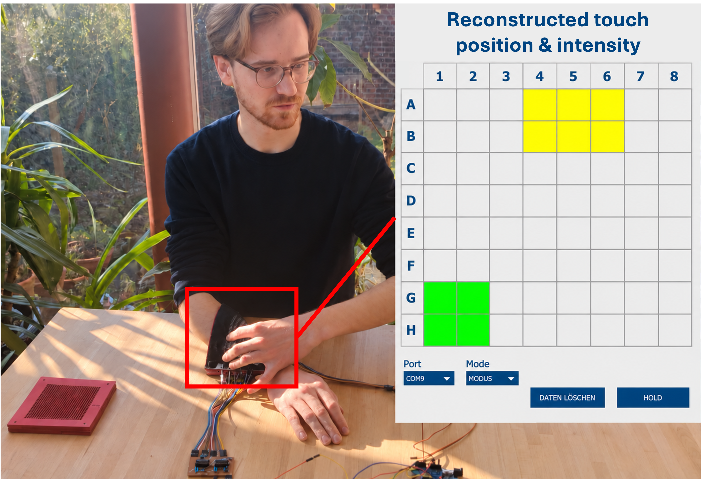

Robotic Tactile Skin
A completed feasibility study of an experimentally evaluated 8 × 8 textile tactile sensor matrix placed on a forearm.
- Project period
- 10/2024 – 03/2025 6 mos
- Context
- BSc course: Product Engineering II at TH Köln
- Status
- Completed feasibility study
- My contribution
- Collaborative sensor development and evaluation
- In collaboration with
- Fabio Jain
64 sensing locations and two discrete activation thresholds, demonstrated in a flexible BSc contact-matrix prototype.

Giving a surface a sense of touch
A tactile surface can help a robot detect where it is being touched. For this project, we also wanted to distinguish lighter from stronger contact, using materials and fabrication methods available in a university workshop.
Fabio Jain and I developed the prototype for Product Engineering II during my bachelor’s degree at TH Köln. We investigated a flexible textile sensor that could be placed on a forearm, with the aim of demonstrating the sensing principle and evaluating its behaviour.
Detecting contact through layered fabric
Our approach used conductive tracks arranged across several layers. One set of tracks runs perpendicular to the others, forming an 8 × 8 matrix with 64 sensing locations. Elastic separators keep the tracks apart until pressure compresses the material enough for them to touch through openings in the separator.
An Arduino activates the sender tracks one at a time and checks which receiver tracks are connected. The combination of an active sender and receiver identifies the contact location.
We used one sender layer and two receiver layers, separated by materials with different triggering thresholds. This provided two discrete contact levels in addition to the untouched state. It could distinguish between those levels, but did not continuously measure force. The diagram below shows the arrangement of conductive layers, separators and protective covers.

Making the sensing layers
We sewed Madeira HC-12 conductive thread onto denim in zigzag tracks. Denim provided a fabric that could be sewn and resisted tearing, while the conductive thread allowed us to build the electrical pattern without specialised printing or plating. The photograph below shows these sewn tracks.

Each track was 5 mm wide, with 8 mm between track centres. We used laser-perforated EVA foam between the sensing layers. Changing its thickness and fill density changed how much pressure was needed to bring the conductors into contact.
The prototype’s material costs were below €10. This was a material-cost figure for the prototype, excluding labour and the cost of an installed system.
Reading the contact matrix
Reading all of the tracks directly would require many microcontroller connections. We used shift registers to activate the sender tracks and read the receiver states through fewer connections. SN74HC595 output registers selected the senders, while SN74HC165 input registers collected the receiver states. Pull-down resistors and protection diodes supported the circuit.
The matrix was scanned sequentially. This reduced the connections needed at the microcontroller, but scanning and physical wiring still presented challenges for larger sensing areas. We did not measure the frame rate or establish whether multiple simultaneous contacts could always be read without false detections.
Testing contact and flexibility
The prototype detected contact across its 64 sensing cells, with several cells responding when a larger area was pressed. To investigate the triggering thresholds, we used a 16 mm test cube with rounded edges and averaged five tests for each configuration.
Increasing the separator’s fill density and increasing its thickness from 2 to 3 mm raised the pressure needed for activation. The investigated activation-pressure range was approximately 10–100 Pa, with rounded threshold values reflecting measurement uncertainty. The communication protocol reserved a third active level for possible future extension, but the prototype implemented two.
We also wrapped the sensor around a 100 mm-diameter cylinder. It remained functional, with no measurable change in activation behaviour in that test.
What the prototype established
The study demonstrated that sewn conductive tracks and elastic separators could form a flexible sensor for locating contact and distinguishing two activation levels. It also exposed limitations that would matter when developing the concept further.
The 8 mm track spacing describes the sensor layout; it is not a validated localisation accuracy. Precise triggering accuracy was not established, and material deformation produced measurement errors of up to 10%. The complete stack was more than 1 cm thick, and the wiring became burdensome as the sensing area increased.
Maximum bending, long-term durability and whole-body coverage remained untested. This was a completed feasibility study rather than a fully developed robotic skin.
Later work with Project Echo
My later role as Skin Team Lead for RSA Project Echo is a separate, ongoing investigation into tactile sensing and protective skin for a humanoid robot.